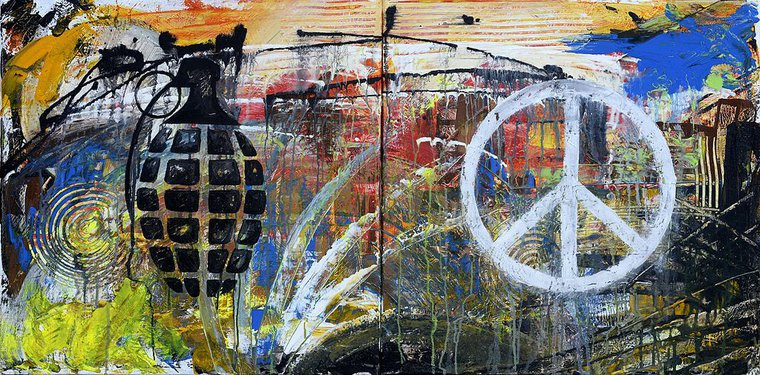

Democracia Guerra y Paz
La relación entre democracia, guerra y paz ha sido objeto de debate en la teoría política y las relaciones internacionales. Si bien la democracia ha sido asociada históricamente con la promoción de la paz, la realidad es más compleja y está sujeta a diversas interpretaciones y contextos.
Democracia y Paz
Teoría de la Paz Democrática: La teoría de la paz democrática, desarrollada por politólogos como Michael Doyle, sostiene que las democracias son menos propensas a ir a la guerra entre sí. Esto se debe a varios factores, entre los que se incluyen:
-Mecanismos Internos de Rendición de Cuentas: En una democracia, los líderes políticos están sujetos a mecanismos de rendición de cuentas a través de elecciones libres y justas. Esto significa que los ciudadanos pueden castigar a los líderes que inicien guerras innecesarias votándolos fuera del cargo.
-Transparencia en la Toma de Decisiones: Las democracias tienden a ser más transparentes en sus procesos de toma de decisiones, lo que reduce la incertidumbre y los malentendidos que pueden llevar a conflictos.
-Valores Comunes y Normas Compartidas: Las democracias comparten valores y normas, como el respeto por los derechos humanos y la resolución pacífica de disputas, lo que disminuye la probabilidad de que recurran a la guerra para resolver sus diferencias.
Democracia y Guerra
Excepciones y Limitaciones de la Paz Democrática: Aunque la teoría de la paz democrática sugiere que las democracias son menos propensas a ir a la guerra entre sí, existen excepciones notables. Las democracias pueden participar en conflictos armados con regímenes autoritarios o en situaciones de guerra civil. Por ejemplo, Estados Unidos, una de las democracias más prominentes del mundo, ha estado involucrado en múltiples conflictos armados con países no democráticos a lo largo de su historia.
Guerra Preventiva y Humanitaria: Las democracias también pueden participar en guerras preventivas o intervenciones humanitarias. Las guerras preventivas son aquellas iniciadas para evitar una amenaza percibida antes de que se materialice completamente. Las intervenciones humanitarias, por otro lado, se llevan a cabo para proteger a los civiles de atrocidades masivas, como genocidios o crímenes de guerra. Estas acciones pueden ser controvertidas y pueden cuestionar la idea de que las democracias son inherentemente pacíficas.
Democratización y Construcción de la Paz
1. Promoción de la Democracia: Existe un debate sobre si la promoción activa de la democracia en el ámbito internacional puede contribuir a la paz mundial. Algunos defienden la idea de que la expansión de la democracia puede crear un entorno más pacífico al fomentar la estabilidad política y la rendición de cuentas. La idea es que un mundo con más democracias sería más pacífico debido a la interdependencia económica y los valores compartidos.
2. Desafíos de la Transición Democrática: Sin embargo, la transición hacia la democracia puede ser un proceso complicado y a menudo está acompañada de inestabilidad y conflictos internos. La democratización puede desencadenar conflictos étnicos y sectarios, especialmente en sociedades donde existen profundas divisiones. Además, los nuevos gobiernos democráticos pueden ser débiles y carecer de la capacidad para mantener el orden y la seguridad. La construcción de instituciones democráticas fuertes y la consolidación de la paz después de un conflicto requieren tiempo, recursos y compromiso político.
3. Instituciones de Gobernanza Internacional: Las instituciones de gobernanza internacional, como la ONU, desempeñan un papel crucial en la promoción de la democracia y la construcción de la paz. Estas organizaciones proporcionan un foro para la resolución pacífica de disputas y pueden intervenir en conflictos para proteger a los civiles y promover la estabilidad. Además, las organizaciones internacionales también pueden ofrecer asistencia técnica y financiera a los países en transición hacia la democracia.
Papel de las Instituciones Internacionales
Organizaciones Internacionales: Las organizaciones internacionales, como las Naciones Unidas, desempeñan un papel importante en la prevención y resolución de conflictos, así como en la promoción de la democracia y los derechos humanos a nivel mundial. La ONU, a través de sus misiones de mantenimiento de la paz y sus programas de desarrollo, trabaja para crear condiciones favorables para la paz y la estabilidad en las regiones conflictivas.
Diplomacia y Cooperación Multilateral: La diplomacia y la cooperación multilateral son fundamentales para abordar los conflictos y resolver disputas de manera pacífica. El diálogo y la negociación son herramientas esenciales para evitar el estallido de conflictos armados y promover la resolución pacífica de disputas. Los esfuerzos diplomáticos pueden incluir la mediación, la facilitación de conversaciones de paz y la imposición de sanciones para disuadir el comportamiento agresivo.
Si bien la relación entre democracia, guerra y paz es compleja y está sujeta a múltiples interpretaciones, existe evidencia empírica que sugiere que las democracias tienden a ser más pacíficas entre sí. Sin embargo, la paz no es automática ni garantizada, y se requieren esfuerzos continuos para promover la democracia, construir instituciones sólidas y fomentar la cooperación internacional en aras de un mundo más pacífico y seguro.
REPRESENTACION

Video
Bibliografía
- Doyle, M. W. (1983). Kant, Liberal Legacies, and Foreign Affairs, Parts 1 and 2. Philosophy & Public Affairs, 12(3), 205-235.